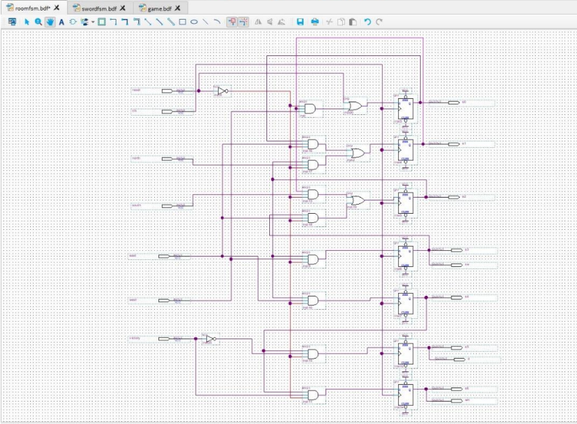
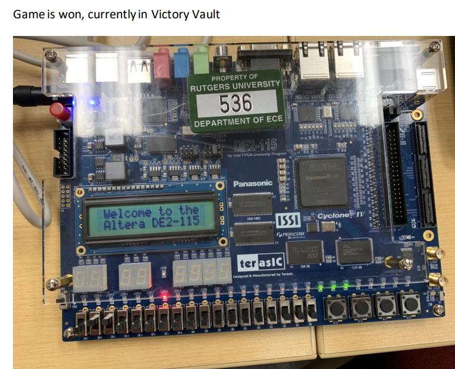

Digital Odyssey Adventure
In the Adventure Game FPGA Design project, I played a pivotal role in the conceptualization, design, and implementation of a digital adventure game using System Verilog on a Terasic FPGA board. The project involved several key responsibilities and contributions that significantly impacted its success.
One of my primary tasks was the creation of hierarchical schematic designs, which included developing modules such as the D-Flip Flop module and Finite State Machines (FSMs) for the Room and Sword components. This hierarchical approach allowed for a structured and organized representation of the game's logic. By breaking down the complex functionalities into modular components, I facilitated easier understanding, maintenance, and scalability of the overall design.
I actively participated in the implementation phase, translating the game's conceptual design into functional System Verilog code. This involved writing code for the D-Flip Flop module to manage sequential logic and implementing FSMs for the Room and Sword components to govern the game's state transitions. My coding contributions were crucial in realizing the envisioned gameplay mechanics and interactions within the FPGA environment.
Verification was a key aspect of ensuring the correctness and reliability of the digital adventure game. I extensively utilized simulation waveforms during the verification process. By running simulations, I could visually analyze the behavior of the game's logic, identify potential issues, and validate the expected outcomes. This meticulous verification step contributed to the robustness of the design, reducing the likelihood of errors and ensuring a more reliable gaming experience.
The culmination of the project involved executing the digital adventure game on the Terasic FPGA board. This practical implementation validated the functionality of the design in a real-world hardware environment. By successfully running the game on the FPGA board, I demonstrated proficiency in FPGA programming and showcased the practical applicability of digital design concepts.
Through my active involvement in the project, I achieved proficiency in FPGA programming and deepened my understanding of digital design concepts. The hands-on experience in designing, coding, verifying, and executing a digital adventure game equipped me with practical skills that extend beyond theoretical knowledge. This proficiency is valuable for future projects involving FPGA development and digital system design.
In summary, my contributions to the Adventure Game FPGA Design project encompassed the creation of hierarchical schematic designs, implementation of game logic in System Verilog, thorough verification using simulation waveforms, and successful execution on the FPGA board. These efforts collectively ensured the project's success, providing valuable insights into FPGA programming and reinforcing digital design principles in a practical context.